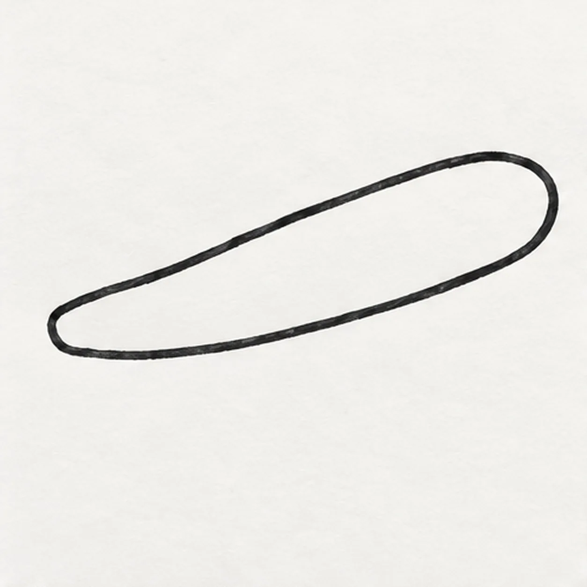
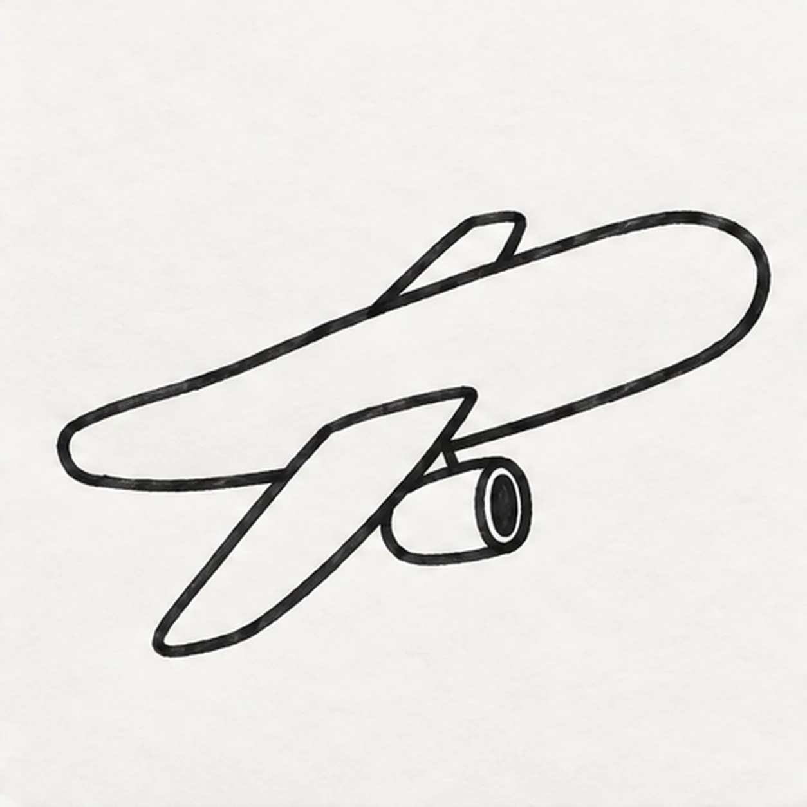
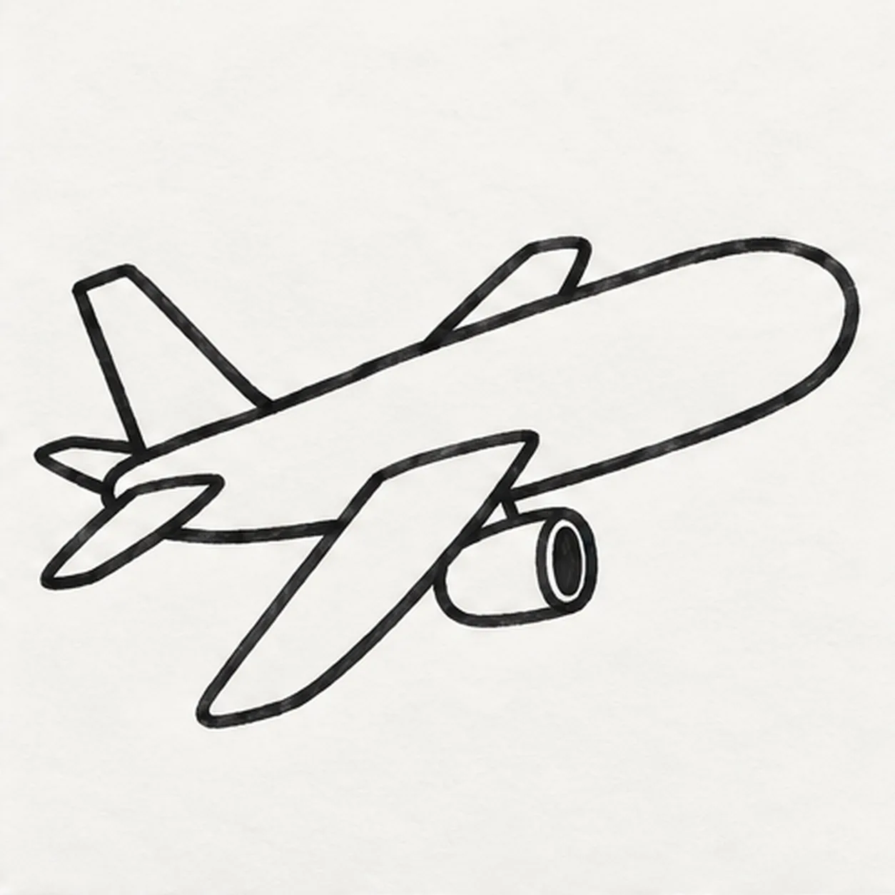

Felt-tip marker mode
Let's draw an airplane
Treat this as one playful practice round: sketch the idea loosely, simplify the shapes, then commit with confident marker outlines and bright fills.
-
01

Pull the rising fuselage
Ghost a shallow rising route twice, then pull the upper fuselage from the narrow tail base into one rounded right-facing nose. Return along the lower edge and close the body at the tail, keeping the middle broad and the silhouette face-free.
Marker tip: Draw the two long edges in confident passes and let a little wobble show. The blunt nose should sit higher than the tail base.
-
02

Sweep out the wings and engine
From the fuselage middle, sweep one broad near wing down and left, then add one shorter far wing above the body. Hang one oval-ended engine pod beneath the near wing with a short pylon, stopping each attachment cleanly at the existing edges.
Marker tip: Rotate the page for the near-wing sweep, then compare the empty triangles around both wings. Keep the engine firmly under the near wing, not floating beside it.
-
03

Build the tail surfaces
Raise one tapered tail fin from the rear fuselage. Attach one near horizontal stabilizer sweeping down-left and one smaller far stabilizer peeking above the tail, keeping all three surfaces rooted at the same tail base.
Marker tip: Trace each tail surface back to its fuselage connection. One fin and two stabilizers are enough; extra fins would muddy the silhouette.
-
04
Fit the cockpit windows and door
Curve one dark cockpit window group around the upper nose, then place exactly four separate rounded cabin windows along the same rising line. Add one rounded rectangular door seam behind the cockpit, keeping it clear of the near wing root.
Marker tip: Place all four cabin windows before filling any one dark. Their rising baseline should echo the fuselage rather than forming a flat row.
-
05
Add sky motion and shine
Place exactly two small puffy clouds in open paper away from the plane, then draw exactly two short parallel dashes trailing behind the tail. Reserve one long fuselage highlight and one shorter near-wing highlight, add one small round dot on the established door, ring the established engine intake with teal, and place one small broken navy shadow accent beneath the airplane.
Marker tip: Keep the clouds clear of the wings and make the two dashes run with the flight angle. Color around both highlight shapes so they stay clean white paper.
-
06
![Handmade face-free felt-tip marker drawing of one coral passenger airplane angled upward to the right with one long rounded fuselage, one broad teal near wing, one smaller warm-yellow far wing, one coral-and-teal engine pod, one teal tail fin, exactly two warm-yellow horizontal stabilizers, one deep-navy cockpit window group, exactly four deep-navy cabin windows, one coral door with one dark dot, exactly two pale-blue clouds, exactly two deep-navy motion dashes, exactly two open-paper highlights, thick imperfect black outlines, visible marker streaks, and one broken deep-navy shadow accent](../assets/cartoon-passenger-airplane-in-flight-finished-v1.webp)
Color the high-flying finish
Fill the established fuselage coral, the near wing and tail fin teal, the far wing and stabilizers warm yellow, the engine coral around its teal ring, the windows deep navy, and the two clouds pale blue. Deepen the existing navy shadow accent and two motion dashes while preserving both open-paper highlights and adding no new structure.
Marker tip: Pull broad strokes lengthwise with the fuselage and outward along each wing. Count four cabin windows, two clouds, two dashes, and two highlights, then stop before the marker grain disappears.
![Handmade face-free felt-tip marker drawing of exactly two crossed garden gloves with one coral foreground glove leaning left, one teal rear glove leaning right, four rounded fingers and one thumb on each glove, one curved palm reinforcement panel per glove, two golden-yellow cuff bands, exactly three black stitch dashes on the foreground cuff and two visible dashes on the partly covered rear cuff, exactly two open-paper curved highlights, one separate bright-green pointed leaf with a dark branching vein pattern, thick imperfect black outlines, visible marker streaks, and one broken deep-navy ground shadow](../assets/cartoon-garden-gloves-with-leaf-finished-v1.webp)
![Handmade face-free felt-tip marker drawing of one pirate spyglass tilted from lower right toward upper left with one coral tapered main barrel, exactly three black diagonal grip stripes, one wide golden-yellow front lens ring, one deep-aqua lens with one large open-paper crescent reflection, exactly two teal telescoping rear tubes, exactly two golden-yellow joint collars, one rounded teal eyepiece, one deep-navy wrist cord attached with one knot and forming one open loop, exactly three golden-yellow four-point sparkle bursts, exactly two open-paper hardware highlights, thick imperfect black outlines, visible marker streaks, and one broken deep-navy shadow made from three loose patches](../assets/cartoon-pirate-spyglass-finished-v1.webp)
![Handmade face-free felt-tip marker drawing of one front-facing teal laundry basket with exactly two oval side handles, three broad horizontal weave rows, four aligned vertical divider routes, one coral sock and one golden-yellow sock draped over the rear rim with exactly three deep-navy curved stripes each, one violet folded towel between them with one dark stitched edge, exactly two open-paper highlights on the lower basket front, thick imperfect black outlines, visible marker streaks, and one broken deep-navy ground shadow](../assets/cartoon-laundry-basket-with-striped-socks-finished-v1.webp)